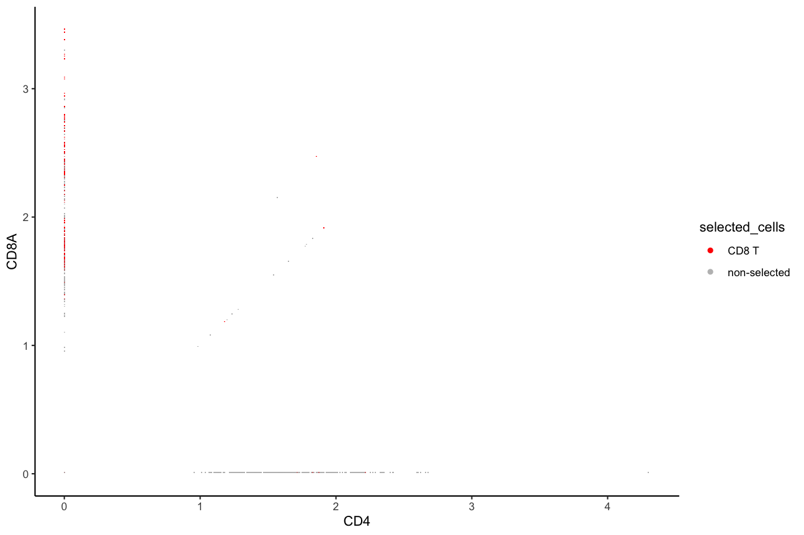
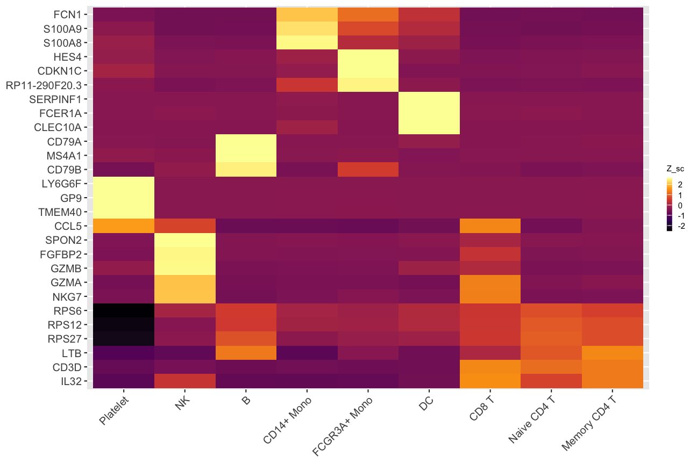

Using pochi with Seurat
pochi-Seurat.RmdIntroduction
Installation
Currently, pochi is available at Github and can be downloaded using the devtools (or remotes) package.
devtools::install_github("diegoalexespi/pochi")Loading data
Loading required packages
The pochi package
operates on Seurat
objects. We load the Seurat, SeuratData, and
pochi packages here for our analyses, as well as the
magrittr package in order to improve legibility of code
through using the pipe %>% operator.
We load the pbmc3k data from the SeuratData package.
InstallData("pbmc3k")
pbmc3k_seurat <- LoadData("pbmc3k")## Validating object structure## Updating object slots## Ensuring keys are in the proper structure
## Ensuring keys are in the proper structure## Ensuring feature names don't have underscores or pipes## Updating slots in RNA## Validating object structure for Assay 'RNA'## Object representation is consistent with the most current Seurat version
set.seed(789)
pbmc3k_seurat <- pbmc3k_seurat[,!is.na(pbmc3k_seurat$seurat_annotations)]
pbmc3k_seurat <- NormalizeData(pbmc3k_seurat)## Normalizing layer: counts
pbmc3k_seurat$condition <- sample(c("WT", "KO"), size = ncol(pbmc3k_seurat), replace = TRUE)
pbmc3k_seurat$replicate <- sample(1:3, size = ncol(pbmc3k_seurat), replace = TRUE)
pbmc3k_seurat@meta.data %>% head()## orig.ident nCount_RNA nFeature_RNA seurat_annotations condition
## AAACATACAACCAC pbmc3k 2419 779 Memory CD4 T WT
## AAACATTGAGCTAC pbmc3k 4903 1352 B KO
## AAACATTGATCAGC pbmc3k 3147 1129 Memory CD4 T WT
## AAACCGTGCTTCCG pbmc3k 2639 960 CD14+ Mono WT
## AAACCGTGTATGCG pbmc3k 980 521 NK KO
## AAACGCACTGGTAC pbmc3k 2163 781 Memory CD4 T WT
## replicate
## AAACATACAACCAC 3
## AAACATTGAGCTAC 3
## AAACATTGATCAGC 3
## AAACCGTGCTTCCG 1
## AAACCGTGTATGCG 2
## AAACGCACTGGTAC 1Visualizations
AbundancePlot
AbundancePlot(pbmc3k_seurat, group.by = "seurat_annotations", split.by = "condition", replicate.by = "replicate")
AbundancePlot(pbmc3k_seurat, group.by = "seurat_annotations", split.by = "condition", replicate.by = "replicate", paired = TRUE, draw_paths = TRUE, sina_shift = FALSE)
AssignQuantiles
pbmc3k_seurat <- AssignQuantiles(pbmc3k_seurat, feature = "B2M", assay = "RNA", slot = "data", split.by = "condition", quantile.probs = c(0,0.4,0.8,1))## Warning: The `slot` argument of `FetchData()` is deprecated as of SeuratObject 5.0.0.
## ℹ Please use the `layer` argument instead.
## ℹ The deprecated feature was likely used in the pochi package.
## Please report the issue to the authors.
## This warning is displayed once every 8 hours.
## Call `lifecycle::last_lifecycle_warnings()` to see where this warning was
## generated.
RidgePlot(pbmc3k_seurat, group.by = "B2M.quantile", features = "B2M")## Warning: `PackageCheck()` was deprecated in SeuratObject 5.0.0.
## ℹ Please use `rlang::check_installed()` instead.
## ℹ The deprecated feature was likely used in the Seurat package.
## Please report the issue at <https://github.com/satijalab/seurat/issues>.
## This warning is displayed once every 8 hours.
## Call `lifecycle::last_lifecycle_warnings()` to see where this warning was
## generated.## Picking joint bandwidth of 0.049
BackGatePlot
BackgatePlot(pbmc3k_seurat, feature1 = "CD4", feature2 = "CD8A", metadata.col = "seurat_annotations", metadata.selection = "Memory CD4 T")
BackgatePlot(pbmc3k_seurat, feature1 = "CD4", feature2 = "CD8A", metadata.col = "seurat_annotations", metadata.selection = "CD8 T")
Heatmaps
rna_markers <- presto::wilcoxauc(pbmc3k_seurat, group_by = "seurat_annotations")## Warning: The `slot` argument of `GetAssayData()` is deprecated as of SeuratObject 5.0.0.
## ℹ Please use the `layer` argument instead.
## ℹ The deprecated feature was likely used in the presto package.
## Please report the issue to the authors.
## This warning is displayed once every 8 hours.
## Call `lifecycle::last_lifecycle_warnings()` to see where this warning was
## generated.
top_rna_markers <- rna_markers %>%
dplyr::filter(padj < 0.01, logFC > 0) %>%
dplyr::group_by(group) %>%
dplyr::slice_min(padj, with_ties = FALSE, n = 3)
DoStarHeatmap(pbmc3k_seurat, diff_exp_results = rna_markers %>% dplyr::filter(group != "Platelet"), assay = "RNA", slot = "data", group.by = "seurat_annotations", p_val_choice = 0.01, logFC_choice = 2)## diff_exp_results in Presto format## ==================================================## Scale for y is already present.
## Adding another scale for y, which will replace the existing scale.## Scale for x is already present.
## Adding another scale for x, which will replace the existing scale.
## Scale for y is already present.
## Adding another scale for y, which will replace the existing scale.
## Scale for x is already present.
## Adding another scale for x, which will replace the existing scale.## Warning: Removed 40 rows containing missing values or values outside the scale range
## (`geom_text()`).
DoClusteredHeatmap(pbmc3k_seurat, features = top_rna_markers$feature, assay = "RNA", group.by = "seurat_annotations")## ==================================================## Scale for y is already present.
## Adding another scale for y, which will replace the existing scale.
## Scale for x is already present.
## Adding another scale for x, which will replace the existing scale.
## Scale for y is already present.
## Adding another scale for y, which will replace the existing scale.
## Scale for x is already present.
## Adding another scale for x, which will replace the existing scale.

ModulePlot
pbmc3k_seurat <- CellCycleScoring(pbmc3k_seurat, s.features = cc.genes.updated.2019$s.genes, g2m.features = cc.genes.updated.2019$g2m.genes)## Warning: The following features are not present in the object: DTL, UHRF1,
## EXO1, CASP8AP2, E2F8, not searching for symbol synonyms## Warning: The following features are not present in the object: PIMREG, BUB1,
## HJURP, CDCA3, JPT1, TTK, CDC25C, DLGAP5, CDCA2, ANLN, GAS2L3, not searching for
## symbol synonyms
ModulePlot(pbmc3k_seurat, features = "S.Score", assay = "RNA", split.by = "condition", replicate.by = "replicate")## As of Seurat v5, we recommend using AggregateExpression to perform pseudo-bulk analysis.
## This message is displayed once per session.## Error in (function (x, cutpoints = c(0.3, 0.6, 0.8, 0.9, 0.95), symbols = if (numeric.x) c(" ", : argument "x" is missing, with no defaultSession Info
## R version 4.4.2 (2024-10-31)
## Platform: x86_64-apple-darwin20
## Running under: macOS Sequoia 15.5
##
## Matrix products: default
## BLAS: /Library/Frameworks/R.framework/Versions/4.4-x86_64/Resources/lib/libRblas.0.dylib
## LAPACK: /Library/Frameworks/R.framework/Versions/4.4-x86_64/Resources/lib/libRlapack.dylib; LAPACK version 3.12.0
##
## locale:
## [1] en_US.UTF-8/en_US.UTF-8/en_US.UTF-8/C/en_US.UTF-8/en_US.UTF-8
##
## time zone: America/New_York
## tzcode source: internal
##
## attached base packages:
## [1] stats graphics grDevices utils datasets methods base
##
## other attached packages:
## [1] tidyr_1.3.1 ggplot2_3.5.2 pochi_0.1.0
## [4] pbmc3k.SeuratData_3.1.4 SeuratData_0.2.2.9002 Seurat_5.3.0
## [7] SeuratObject_5.1.0 sp_2.2-0
##
## loaded via a namespace (and not attached):
## [1] RColorBrewer_1.1-3 ggdendro_0.2.0 rstudioapi_0.17.1
## [4] jsonlite_2.0.0 magrittr_2.0.3 ggbeeswarm_0.7.2
## [7] spatstat.utils_3.1-4 farver_2.1.2 rmarkdown_2.29
## [10] fs_1.6.6 ragg_1.4.0 vctrs_0.6.5
## [13] ROCR_1.0-11 spatstat.explore_3.4-3 rstatix_0.7.2
## [16] forcats_1.0.0 htmltools_0.5.8.1 broom_1.0.8
## [19] Formula_1.2-5 sass_0.4.10 sctransform_0.4.2
## [22] parallelly_1.45.0 KernSmooth_2.23-26 bslib_0.9.0
## [25] htmlwidgets_1.6.4 desc_1.4.3 ica_1.0-3
## [28] plyr_1.8.9 plotly_4.11.0 zoo_1.8-14
## [31] cachem_1.1.0 igraph_2.1.4 mime_0.13
## [34] lifecycle_1.0.4 pkgconfig_2.0.3 Matrix_1.7-3
## [37] R6_2.6.1 fastmap_1.2.0 fitdistrplus_1.2-2
## [40] future_1.58.0 shiny_1.11.0 digest_0.6.37
## [43] colorspace_2.1-1 patchwork_1.3.1 tensor_1.5.1
## [46] RSpectra_0.16-2 irlba_2.3.5.1 textshaping_1.0.0
## [49] ggpubr_0.6.0 labeling_0.4.3 progressr_0.15.1
## [52] spatstat.sparse_3.1-0 httr_1.4.7 polyclip_1.10-7
## [55] abind_1.4-8 compiler_4.4.2 withr_3.0.2
## [58] backports_1.5.0 carData_3.0-5 viridis_0.6.5
## [61] fastDummies_1.7.5 ggforce_0.4.2 ggsignif_0.6.4
## [64] MASS_7.3-65 rappdirs_0.3.3 tools_4.4.2
## [67] vipor_0.4.7 lmtest_0.9-40 beeswarm_0.4.0
## [70] httpuv_1.6.16 future.apply_1.20.0 goftest_1.2-3
## [73] glue_1.8.0 nlme_3.1-168 promises_1.3.3
## [76] grid_4.4.2 Rtsne_0.17 cluster_2.1.8.1
## [79] reshape2_1.4.4 generics_0.1.4 gtable_0.3.6
## [82] spatstat.data_3.1-6 data.table_1.17.6 car_3.1-3
## [85] spatstat.geom_3.4-1 RcppAnnoy_0.0.22 ggrepel_0.9.6
## [88] RANN_2.6.2 pillar_1.10.2 stringr_1.5.1
## [91] spam_2.11-1 RcppHNSW_0.6.0 later_1.4.2
## [94] splines_4.4.2 tweenr_2.0.3 dplyr_1.1.4
## [97] lattice_0.22-7 survival_3.8-3 deldir_2.0-4
## [100] tidyselect_1.2.1 miniUI_0.1.2 pbapply_1.7-2
## [103] knitr_1.50 gridExtra_2.3 scattermore_1.2
## [106] xfun_0.52 matrixStats_1.5.0 stringi_1.8.7
## [109] lazyeval_0.2.2 yaml_2.3.10 evaluate_1.0.4
## [112] codetools_0.2-20 tibble_3.3.0 cli_3.6.5
## [115] uwot_0.2.3 xtable_1.8-4 reticulate_1.42.0
## [118] systemfonts_1.2.2 jquerylib_0.1.4 dichromat_2.0-0.1
## [121] Rcpp_1.0.14 globals_0.18.0 spatstat.random_3.4-1
## [124] png_0.1-8 ggrastr_1.0.2 spatstat.univar_3.1-3
## [127] parallel_4.4.2 pkgdown_2.1.2 presto_1.0.0
## [130] dotCall64_1.2 listenv_0.9.1 viridisLite_0.4.2
## [133] scales_1.4.0 ggridges_0.5.6 purrr_1.0.4
## [136] crayon_1.5.3 rlang_1.1.6 cowplot_1.1.3